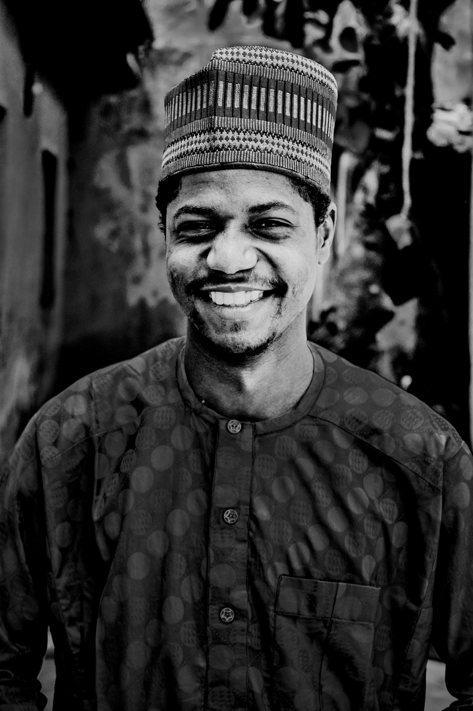
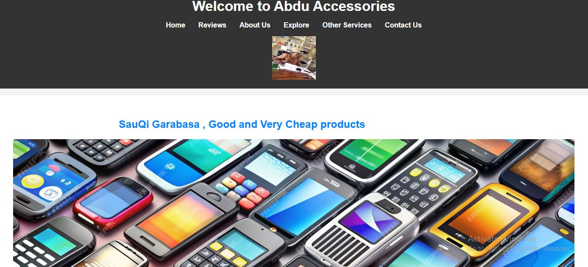
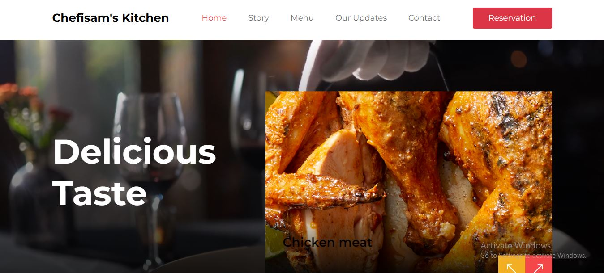

Welcome to My Portfolio
I’m Abdullahi Bashir Abdu, a Software learner and creator.

Abdullahi Bashir Abdu
Sir.Engr. Abdullahi Bashir Abdu is an architect and software engineer
See ProfileAbout Me
I attended my primary school at Sabon Gida Ringim (2005–2011),
and then I moved to JSS Galadanchi (2011–2013). Later, I joined
Dutse Model for my junior and senior secondary education (2013–2017).
I re-wrote my NECO SSCE at Gwale College of Arabic and Secondary School (2017–2018).
After that, I completed my diploma in Informatics at Kazaure (2018–2020).
Subsequently, I joined FUD through Direct Entry (2022) and continued my education.
"I have a deep interest in software development, with a focus on web technologies. During my diploma in Informatics, I developed skills in programming languages like HTML, CSS, and JavaScript, which sparked my enthusiasm for building functional and visually appealing websites. My goal is to expand this expertise into full-stack development to create impactful digital solutions."
My Works

Abdu Accesories
A software of Abdu Accesories that allows to buy accesories and contact Abdu for other services.
View on GitHub View on Web

Chefiman's kitchens
chefisams kitchens provide services like events and allows to reserved an order.
View on GitHub View on Web
Skills
- Ui/Ux Design
- HTML
- CSS
- JavaScript
- N.D Computer Science
Certifications